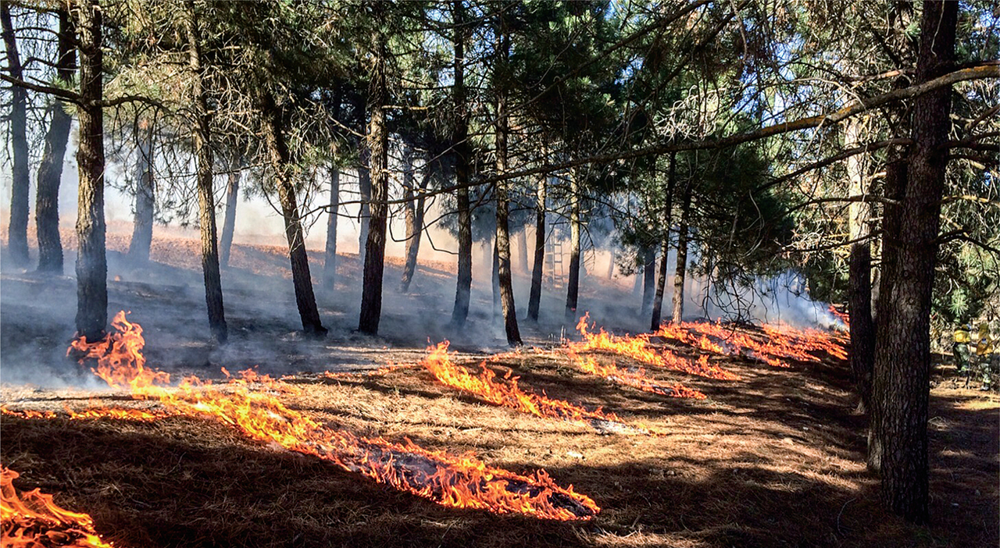
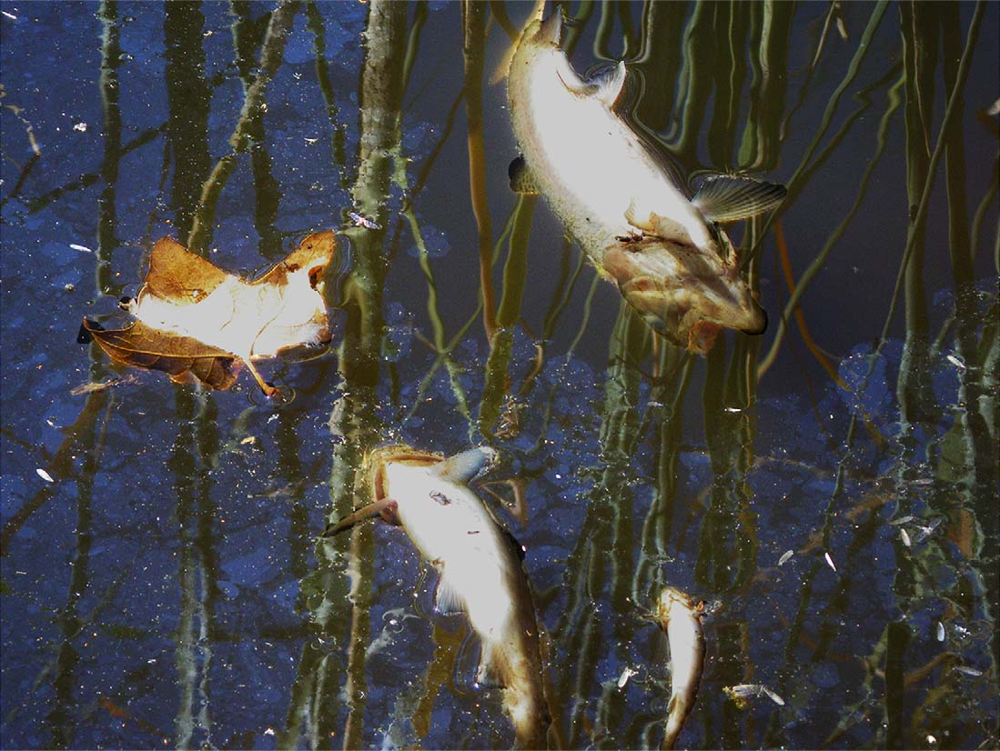

Environmental Impact of Wildfires
Effects on the Environment
Wildfires play a key role in shaping ecosystems by serving as an agent of renewal and change. But fire can be deadly, destroying homes, wildlife habitat and timber, and polluting the air with emissions harmful to human health. Fire also releases carbon dioxide—a key greenhouse gas—into the atmosphere.
Biodiversity
-
Large patches of high-severity fire can hinder the ability of an ecosystem to recover, potentially undermining conservation of native biodiversity by long-term or permanent loss of native vegetation, expansion of non-native and invasive species, and long-term or permanent loss of essential habitat for native species.
-
Grazing and fires are linked to plant invasions. Gaps created by high-intensity fires are particularly susceptible to invasion by exotic species. Invasive species reduces the biodiversity of an area through allelopathic pathways.
Affects on Animal Habitats
-
The biggest effect fire has on wildlife is the change in their habitats. Fire changes the proportion, arrangement, and characteristic of habitats across the landscape. Immediately after a fire, there can be temporary loss of food and shelter.
-
Animal populations may shift from species that prefer cool, moist conditions to ones that prefer warm, dry conditions.
-
Herbivores and species that prefer herbaceous vegetation for cover prefer the grass/forb habitats or broad-leafed forests that often become established after a burn.
-
Fire-killed trees become food for millions of insect larvae and/or snags that provide perches for raptors. Snags and downed woody debris also provide important habitat for cavity nesters, reptiles, small mammals, and even large mammals such as bears.
Ecosystems
-
Bodies of water such as streams and rivers that flow through a fire burned area can be altered.
-
Impacts from wildfires can be detrimental to aquatic species. Fires can make the streams warmer which is not good for fish
-
Changes to the water flow or volume of the water can also occur from wildfires.
-
Wildfires can increase volume of water because more is running off the slope or through the soil instead of being drawn up by plants.
-
Debris will flow or landslides can occur, and these may alter the course of a stream. Following wildfires, harmful sediment can also enter streams along with any runoff.
-
However, some of the sediment that infiltrates the water is filled with nutrients for insects, which in turn becomes great food for fish and plants.